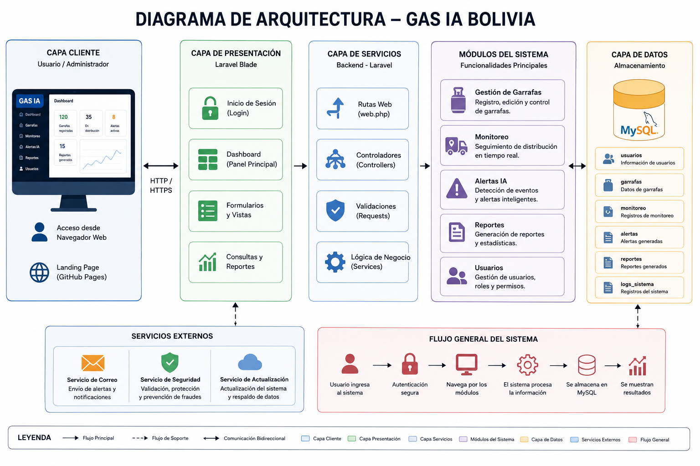
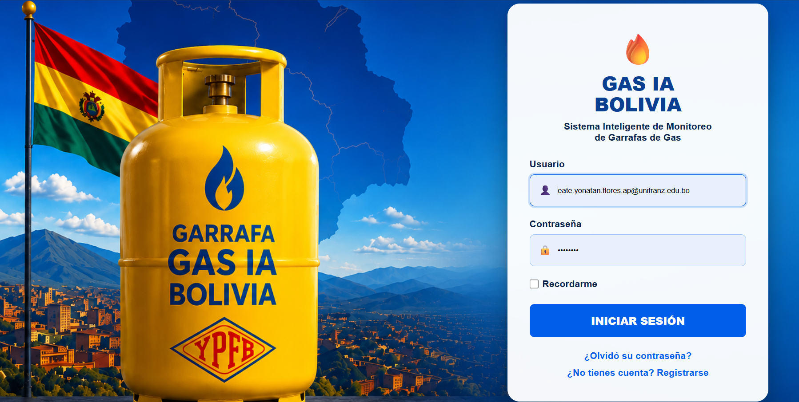
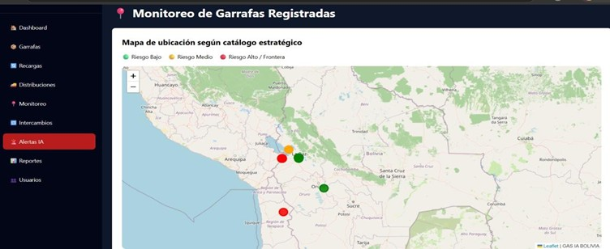

Sistema inteligente para el monitoreo, trazabilidad y gestión de garrafas de GLP en Bolivia.
Gas IA Bolivia es una plataforma web desarrollada para mejorar el control de garrafas de GLP, permitiendo organizar registros, visualizar información, monitorear estados y apoyar la toma de decisiones mediante reportes y alertas del sistema.
Visualización general de indicadores, registros y actividad del sistema.
Registro, consulta y administración de garrafas dentro de la plataforma.
Seguimiento del estado de las garrafas y control de información relevante.
Visualización de alertas relacionadas con eventos importantes del sistema.
Generación de reportes para respaldar la gestión y consulta de información.
Acceso mediante autenticación y control de usuarios autorizados.
El sistema se organiza en capas: cliente, presentación, servicios, módulos funcionales y datos, permitiendo una estructura clara para el desarrollo y mantenimiento del proyecto.

La demostración interactiva permite visualizar el funcionamiento general del sistema sin modificar datos reales.


Yonatan Flores Apaza
Ingeniería de Sistemas - ISI-511
Universidad Privada Franz Tamayo